Live builds
Every file fpm compiles, in parallel, with its package, status and time — warnings included.
Open source · Python & Qt · macOS, Linux, Windows
VibeFPMGUI is a graphical front end for the Fortran Package Manager. Build, run and test with live progress, explore your dependencies as a graph, and edit Fortran with a language server, linting, formatting and an AI reviewer that runs entirely on your machine.
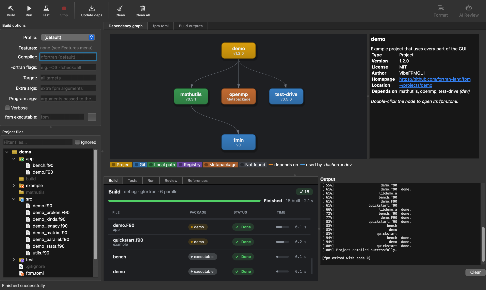
One window for the whole loop: open an fpm.toml, build, test, read the
messages, fix the code, repeat.
Every file fpm compiles, in parallel, with its package, status and time — warnings included.
Each test with pass/fail, time and its own output, and a progress bar that learns how long they take.
Your project and every dependency as an interactive graph, with layouts and themes.
Syntax highlighting, compiler markers, find and replace — and it remembers your open files.
Hover docs, go to definition, completion, argument hints, references and rename, via fortls.
fortitude checks your code as you type; fprettify tidies it with one click.
A code review from a model running on your own computer with Ollama — nothing leaves it.
See which git dependencies have newer tags, and update a pin with one click.
Build
Run fpm build, run, test, update and clean
from the toolbar, with the usual options — profile, compiler, flags, features, target and arguments.
Hover an option to see the fpm flag it becomes.
fpm.toml.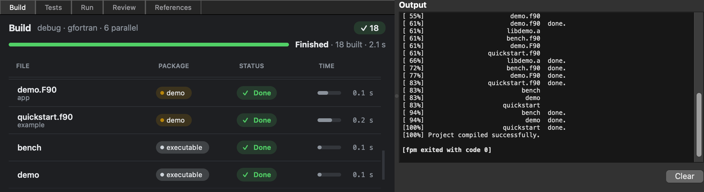
Test & run
Test builds, lists the tests, then runs each one through a small wrapper so its start,
end and exit code are known — even with your own --runner such as mpirun.
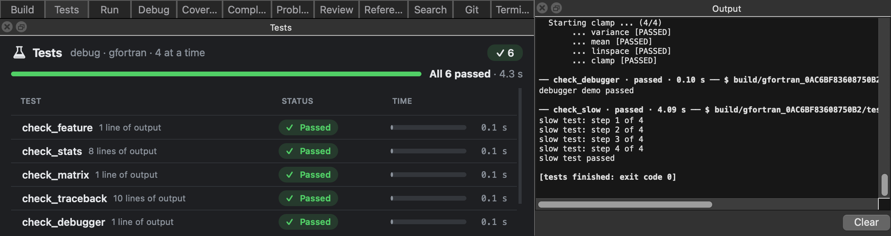
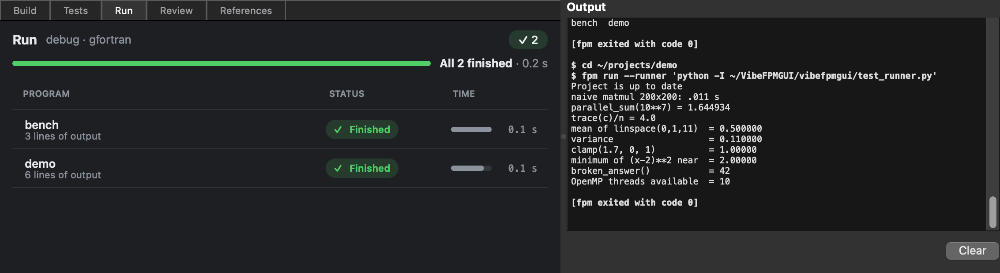
Dependencies
The dependency diagram is built from your fpm.toml and those of every downloaded dependency —
git, local path, registry and metapackages, with dev dependencies dashed.


Project files
The file tree lists the project and each dependency, with fpm's folders badged — library sources, programs, tests, examples, include files.
.gitignore line.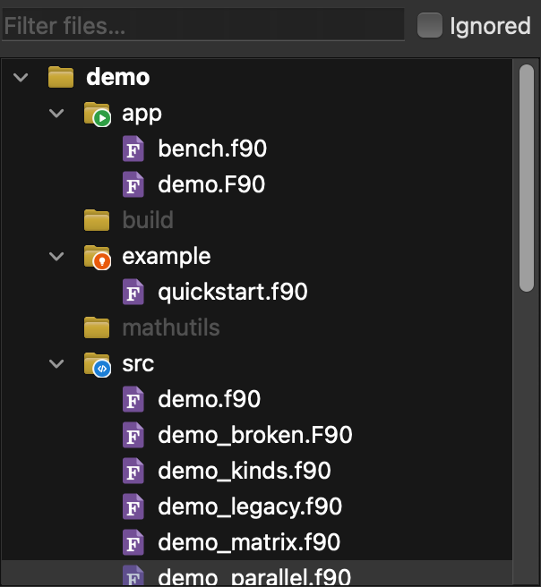

Editor
Double-click a file — or a row in the build grid — and it opens in the built-in editor, with the build's warnings and errors in the gutter. Open tabs, cursor positions and the file tree are remembered per project.


Rest on a name for its declaration and doc comment. Intrinsics get their full manual page, rendered, with a badge and their category.
Language server
The editor talks to fortls, which indexes your project and its dependencies — only fpm's own folders, so a Python environment inside the project doesn't get in the way.

After two letters, or a % for a type's components — your names, your dependencies' and the intrinsics.
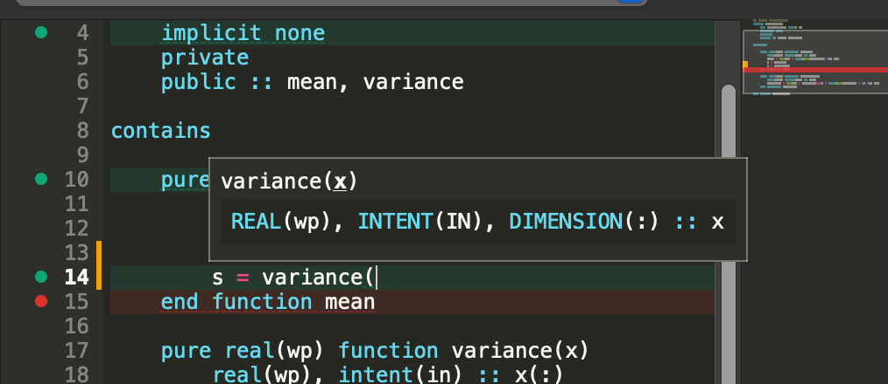
Typing a call shows its arguments, the current one underlined, with its declaration and documentation.
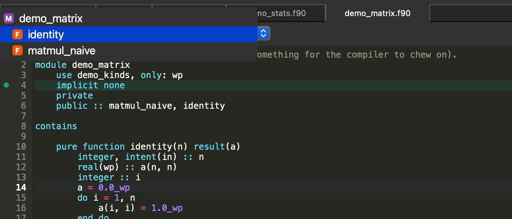
The file's modules, types and procedures, with a badge for each kind; it follows the cursor.

F12 or ⌘-click jumps to a definition — even inside a dependency — and back again. ⇧F12 lists every use, grouped by file. ⌘T finds any symbol in the project.
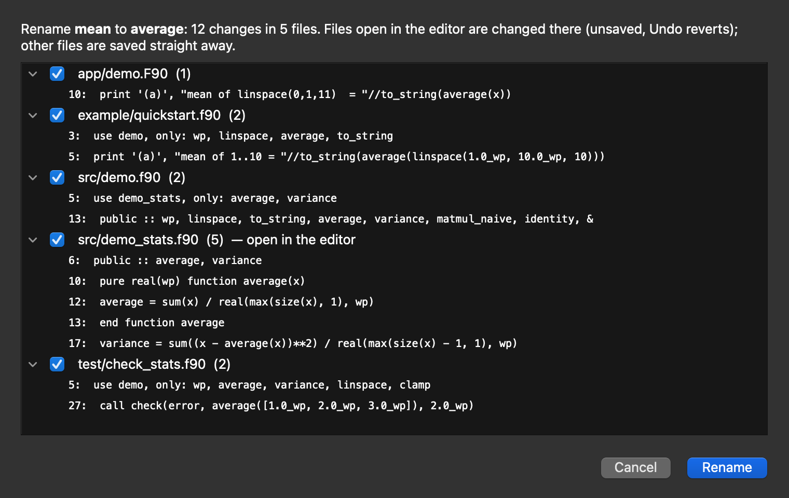
F2 renames a name everywhere it's used, after showing every line that will change. Open files change in the editor (one Undo); dependency files are left alone unless you tick them.
AI review
AI → Review Current File sends the file in the editor — and its compiler messages — to a model running locally through Ollama. No code is sent anywhere, and once the model is downloaded it works offline.
qwen2.5-coder:7b) and a focus: bugs, modern style,
performance or documentation.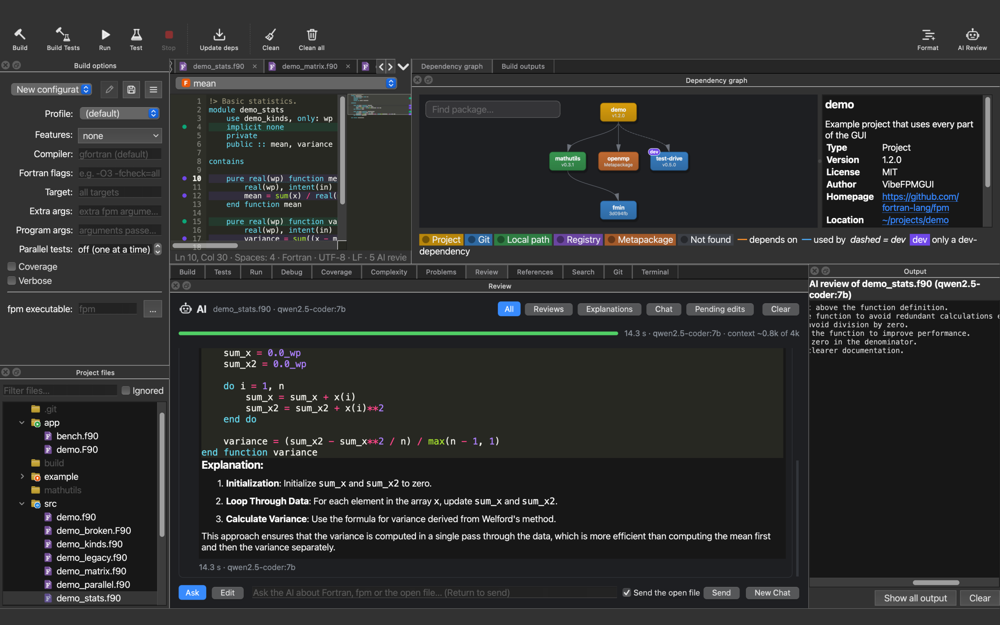
Make it yours
View → Syntax Colours offers every installed Pygments style, light or dark — or follows your system automatically. Text size, graph theme and layout are yours to choose too.
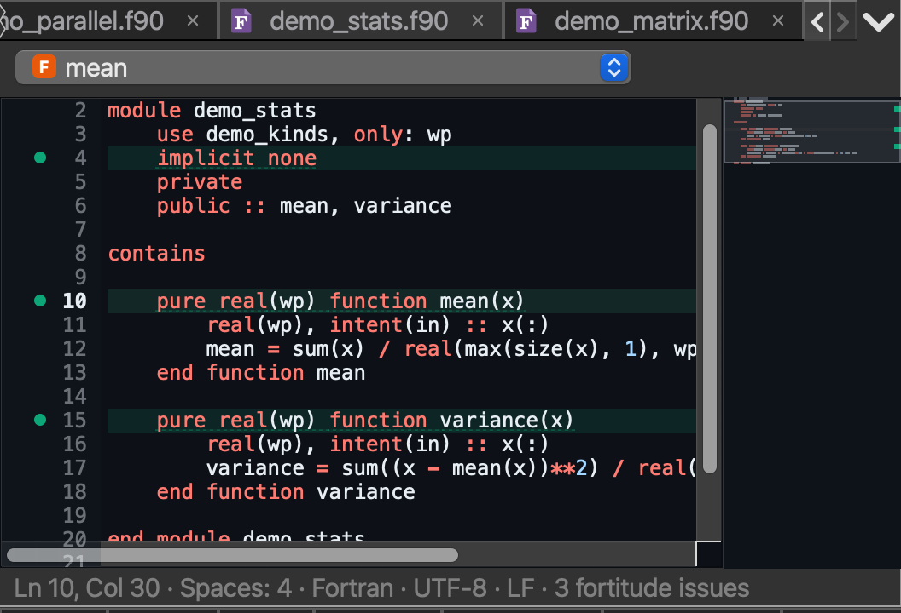

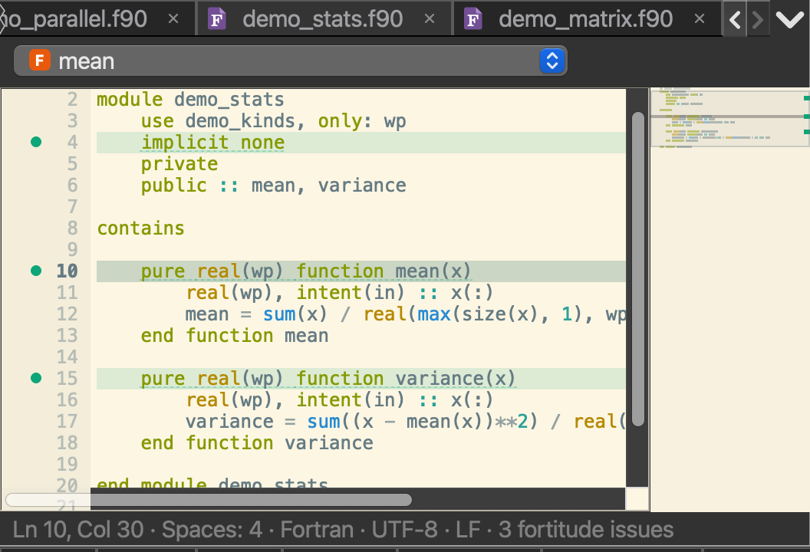
The easiest way is pixi: one environment with fpm, gfortran, fortls, fortitude, fprettify and Ollama.
# get the code
git clone https://github.com/jacobwilliams/VibeFPMGUI
cd VibeFPMGUI
# start it (reopens your last project)
pixi run start
pixi run start path/to/fpm.toml
# try the demo project
pixi run demopip install . # the app
pip install .[fortran] # + fortls, fortitude, fprettify
pip install .[ai] # + the Ollama client
vibefpmgui path/to/fpm.tomlfpm and a Fortran compiler need to be on your PATH. For AI review, install
Ollama; the app offers to download the model the first time.
The demo project in examples/demo uses features, profiles, git, path and
metapackage dependencies, warnings, parallel compiles and tests — so every part of the app has something to show.

Python and Qt (PySide6 through qtpy), pyqtgraph for the graph and Pygments for highlighting — on top of fpm, fortls, fortitude, fprettify and Ollama.
Source on GitHub